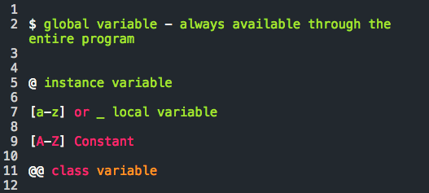

Variable Scope: All Aout Context
12.02.2014
In Ruby (and programming in general), there are a number of variables to choose from. Each type of variable has its own scope, which refers to its accessibility/visibility throughout a program. The types of variables are:
The symbols in front of them indicate how to properly name them.
$ global variable Pros: Available everywhere Cons: Available everywhere (can be changed by anyone and everyone) Easily overused (especially by beginners)
@ instance variable Each instance/object of the class will have its own value.
[a-z] or _ local variable Only accessible within its defined function or class declaration.
@@ class variable Class variables are accessible to all instances of class. Cons: Pretty large scope. One object instance can change the value of the variable which can affect all object instances.
Unsure what type of variable you have?
Use the #defined? method to find out what the scope.
All in all, not so bad, right? I hope this brief introduction to variable scope provides a little clarity.